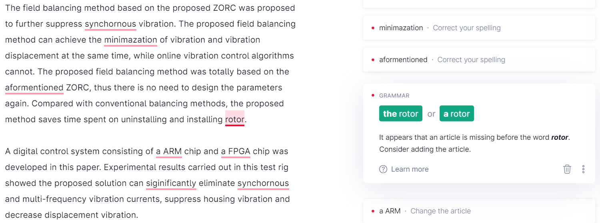
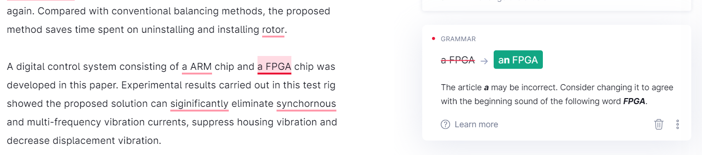
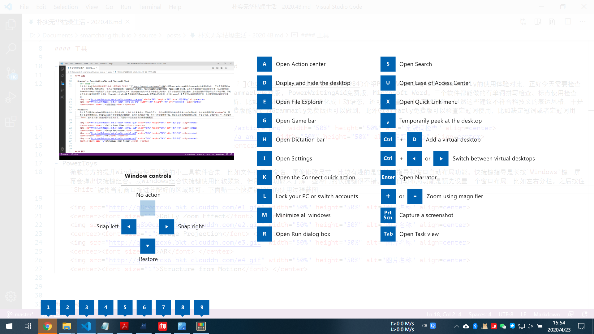
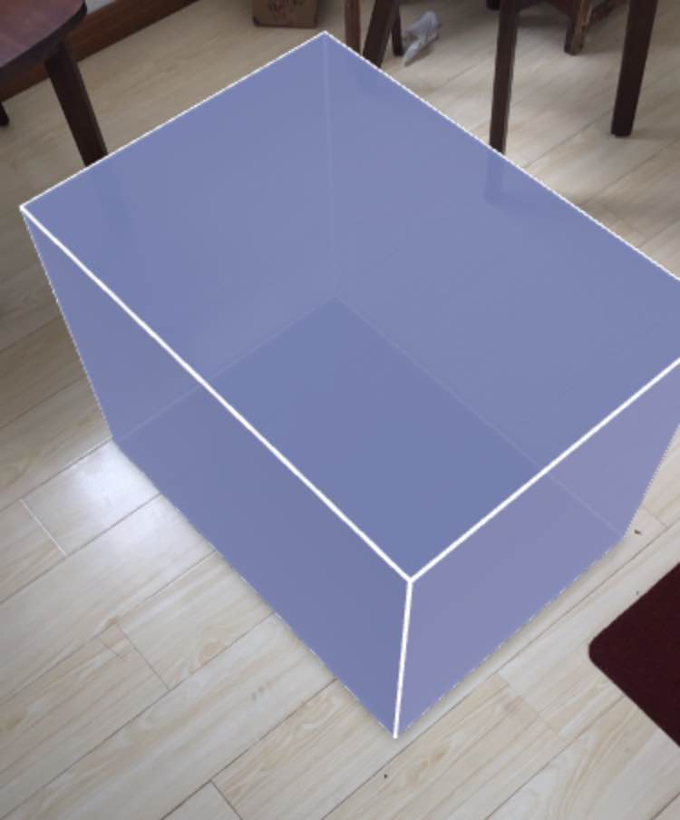
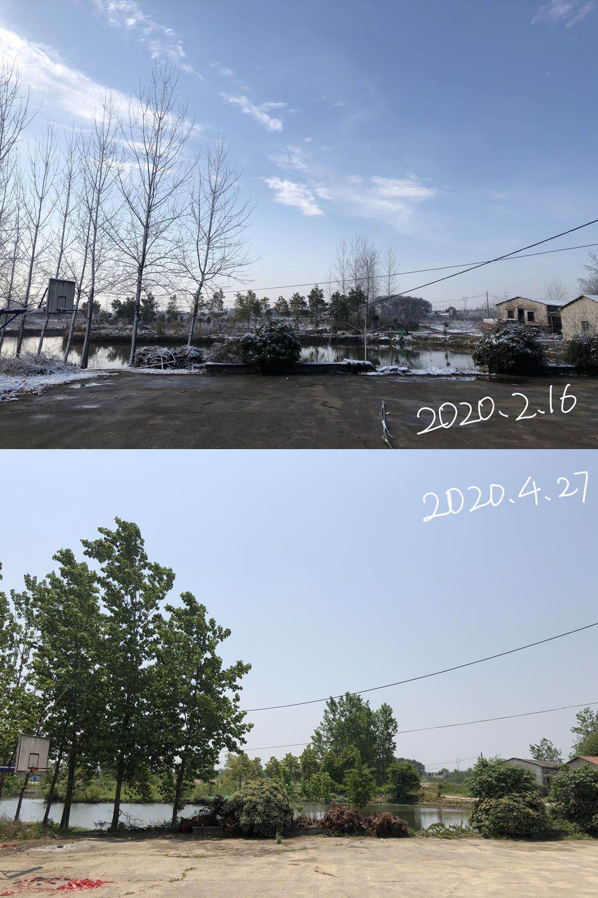

好玩的工具
Grammarly, PowerWritingAid and Microsoft Word
少数派的文章 我的英语智能写作助手，是否真的「智能」？ 和 Microsoft Editor vs. Grammarly: 谁更适合你？ 介绍 PowerWritingAid 和 Grammarly 的使用体验对比，正好今天需要检查一下论文的摘要，我就试用了一下这三个软件的效果：Grammarly 免费版，PowerWritingAid 免费版，Microsoft Word。三个软件都能做的有单词拼写检查、标点使用检查，PowerWritingAid 免费版可以在这个基础上进行句式分析，比如检查出被动句并建议优化成主动语态，还可以检查副词并建议删除。显然这些建议不符合科技文的表达风格，于是这个功能对我来说没有什么用处。PowerWritingAid 免费版能做到的 Grammarly 免费版也可以做到，此外 Grammarly 免费版可以检查定冠词使用，比如缺定冠词或者定冠词用错。
▲ 缺少定冠词 
▲ 定冠词搭配不当 PowerToys
微软官方的提升 Windows 使用体验的小工具软件合集 PowerToys，功能有文件批量重命名、图像修改尺寸，我觉得比较有趣的是快捷键导航和窗口自动布局功能。快捷键导航是长按Windows键，屏幕会弹出快捷键组合。我 Windows 组合快捷键使用比较频繁，但用这个功能来了解一些冷门的快捷键很不错。窗口自动布局功能是预先设置一个窗口布局，比如左右分栏。之后按住Shift键将当前窗口拖进分配好的区域即可。下面贴一个快捷键指导的使用过程截图。
▲ 快捷键导航使用过程 Size.link
如果你在网上购买某个尺寸的物品的同时又不太能感知这种尺寸拿到手后具体有多大，那么进入这个网站可以帮助到你。进入网页，输入长、宽、高，就可以通过AR在你的桌子或者地板上看这个东西具体有多大。网址：size.link
▲ 地板上显示出立方体
人类观察
